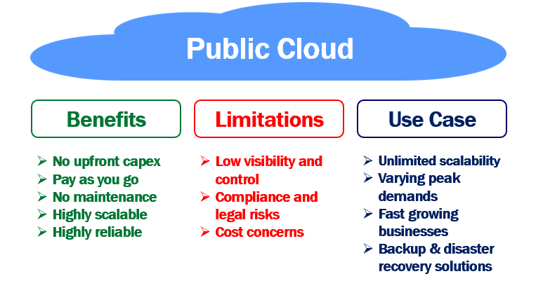
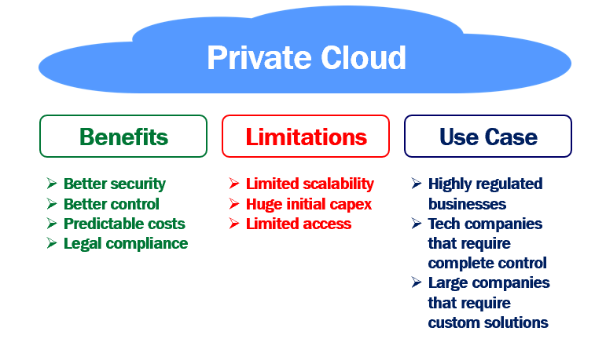
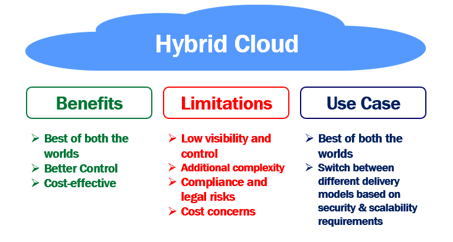

-> There are the following 4 types of cloud that you can deploy according to the organization's needs-
1. Public Cloud
2. Private Cloud
3. Hybrid Cloud
Public Cloud
-> As the name implies, a public cloud is public and is the most common type of cloud.
-> It is easy for anyone i.e an individual or an organisation to start using public cloud resources and services.
-> There is no upfront huge capital expenditure.
-> You don't have to buy the expensive hardware or worry about set up and maintaining the cloud.
-> This is because, with the public cloud, all the infrastructure (i.e the physical servers, storage, networking etc) are procured and owned by the cloud service provider.
-> It is the cloud service provider, that sets up the cloud and maintains it there on.
-> We access public cloud resources and services over the internet.
-> So to use a public cloud, we need an internet connection and manage the cloud services and resources through a web portal provided by the cloud service provider.
-> For the cloud services and resources we use, we pay a monthly fee to the public cloud service provider.
-> This monthly fee is like your utility bills, water or electricity for example.
-> It's pay as you go model, meaning you pay for what you use.
-> Anyone can use the public cloud.
-> In a public cloud, your organisation share the same hardware, storage and network devices with other organisations.
-> In cloud computing terms, this is called multi-tenancy.
-> Your organisation data may be stored along with other organisations data on the same storage device.
-> Example: Amazon Web Service (AWS), Microsoft Azure, IBM's Blue Cloud, Sun Cloud, and Google Cloud are examples of the public cloud.
Advantages of Public Cloud
-> You don't have to buy expensive hardware or set up your own datacenter i.e no upfront capital expenditure.
-> It supports pay as you go model. You only pay for what you use, just like your water, or electricity monthly bills.
-> No maintenance headaches. You as a consumer, don't have to worry about maintaining the public cloud i.e replacing the failed hardware, installing the security patches,
updates etc. Your service provider is responsible for maintaining the public cloud. You only pay a small monthly fee, based on the cloud services you use.
-> Highly scalable. You will almost never run out of resources in a public cloud. Based on your business needs you can scale resources up and down. You can even automate
this by setting threshold limits.
-> Highly reliable. A public cloud is a vast network of servers. So data, is always backed up. This means hardware failure, power failure, natural disaster or other crisis
do not result in data loss. So, bottom line, public cloud is highly reliable.
Disadvantages of Public Cloud
-> Low visibility and control - Public cloud infrastructure is owned by the cloud service provider. You don't have much visibility and control over it.
-> Compliance and legal risks - Since you don't have much visibility and control over public cloud infrastructure, you are relying on the cloud service provider to protect
data and adhere to local and international regulations. Your company may still be liable, if the cloud service provider, fails to live up to
the task and if there is a data breach. So a public cloud, may not be the most viable solution for security sensitive or mission-critical
applications.
-> Cost concerns - Cloud in general, reduces upfront infrastructure costs and it's pay-as-you-go model provides more flexibility. Depending on the traffic, the amount of
cloud resources you consume, the plan you have chosen, the way you scale resources up and down, determines the overall price you pay. Sometimes this
overall price tag may be higher than what you anticipated.
When to use public cloud
-> We never run out of resources in a public cloud.
-> It provides near-unlimited scalability. So, if you want to dynamically scale up and down at will, then public cloud is your solution.
-> Businesses with varying peak demands greatly benefit from the public cloud.
-> When there is high demand you scale up and when the demand subsides, you scale down and pay only for what you use.
-> Fast growing businesses also greatly benefit from the public cloud.
-> They can use the public cloud and quickly scale up operations rather than having to build your own private cloud which not only has huge upfront capital expenditure but
also time consuming.
-> Businesses can also benefit from the public cloud by using it for backup and disaster recovery solutions.

Private Cloud
-> As the name implies, a private cloud is private to one organisation.
-> In other words, a private cloud resources and services are used exclusively by one business or organisation.
-> Unlike public cloud, a private cloud resources are not shared by multiple organisations.
-> All the hardware infrastructure and software are solely dedicated to one organisation.
-> The private cloud is physically located on-premise i.e at your organisation’s on-site data centre, or it can also be hosted by a third-party service provider.
-> The important point to keep in mind is, a private cloud is private, i.e all the hardware infrastructure and software are solely dedicated to one and only one organisation.
-> In a private cloud, it's very easy to customise the hardware and software to meet your oragnisation's specific IT requirements.
-> This is because your organisation, owns everything i.e the hardware, software and network.
-> So you have complete control and can change anything in any way you want to meet your organisation requirements.
-> In general, private clouds are often used by government agencies, financial institutions and any other medium to large-sized organisations with business-critical
operations seeking enhanced control over their environment.
Advantages of Private Cloud
-> Better security - Resources are not shared with other organisations, so there is better security with private cloud.
-> Better control - A private cloud belongs to a specific organisation, so you can customise it to meet your specific business needs.
-> Predictable costs - With private cloud you own all the cloud infrastructure and you are not paying any third party cloud service provider. So your monthly cooling, energy
and maintenance costs are usually predictable.
-> Legal compliance - When you deal with regulated data, for example, financial, health care or credit card data, there are strict rules around where the data is stored, who
can handle and process it and how it is protected. With the private cloud you know where you data center is located. So you know where the data is
stored and how it is protected.
Disadvantages of Private Cloud
-> Limited scalability - The extent to which you can scale up in a private cloud is limited by the amount of infrastructure you have. Beyond certain point, you cannot scale
up. So, the infrastructure is a limiting factor and you may not be able to scale up at will like in the public cloud, to meet unpredictable demands.
-> Huge initial capital expenditure - With the private cloud you have to procure all the cloud infrastructure. Hire the workforce to set up and maintain the cloud. So a
private cloud, is an expensive solution compared to public cloud alternatives especially for short-term projects.
-> Limited access - A private cloud is usually more secure. We use it for security sensitive applications. Because of these high security measures in place, mobile users may
have limited access to the private cloud outside of the corporate network.
When to use a private cloud
-> Private cloud is best suited for highly regulated businesses like financial and healthcare institutions.
-> Tech companies that require robust security and complete control over the cloud infrastructure also benefit from the private cloud.
-> Large organisations that require advanced and custom data centre solutions also benefit from private cloud.

Hybrid Cloud
-> As the name implies, a hybrid cloud is hybrid i.e, it's a combination of both the private cloud and the public cloud.
-> It is not a different cloud altogether.
-> It's just that, both, the private and public clouds work together to meet our organization requirements. I mean, it offers the best of both the worlds.
-> For example, we can use the private cloud for security sensitive, business-critical operations like financial reporting, and, the public cloud for high-volume,
lower-security needs such as web-based email.
-> In a hybrid cloud, we have a concept called cloud bursting. This sounds like a fancy technical term, but all it means is the following.
-> You have an application or a service. To start with, it's hosted and running in your private cloud. The application continues to run in your private cloud until there is a
spike in the demand. When there is a spike in demand, "burst through" to the public cloud to tap into the additional computing resources provided by the public cloud. When
the spike in demand subsides, you scale down just to your private cloud and no longer use the public cloud resources.
-> If you are wondering, why will there be a sudden spike in demand. Well, there are number of reasons. May be you are launching a new business or product line. Seasonal
events like online christmas shopping or tax filing for example, may also increase the traffic to your application or service.
-> With private cloud you only have so much physical infrastructure. How much you can scale up, depends on that physical infrastructure. Beyond certain point, if you want to
scale up, you have to buy additional hardware, which is not only expensive but also time consuming to procure and setup. When the spike in demand subsides, we are no longer
using this additional infrastructure.
Advantages of Hybrid Cloud
-> Best of both the worlds - The obvious benefit is, a hybrid cloud provides, best of both the worlds ie. private and public clouds.
-> Better Control - With the hybrid cloud, you have better control on what runs where. For example, you can use the private cloud for security sensitive apps and the public
cloud for those apps that have high-volumes of traffic, but not that security sensitive.
-> Cost-effective – With the hybrid cloud, you only use public cloud resources when you need them i.e when there is a spike in demand, you burst through to the public cloud
to use that additional computing power provided by the public cloud. When the demand subsides you scale down just to your private cloud.
Disadvantages of Hybrid Cloud
-> Low visibility and control - Just like a public cloud, even in a hybrid cloud, you don't have much visibility and control over infrastructure that is owned by the public
cloud service provider.
-> Additional complexity - Integrating private cloud with public cloud introduces additional infrastructure complexity. Also, it invloves, considerable effort, time and
complexity to maintain and evolve these 2 different types of clouds as the organization needs change.
-> Compliance and legal risks - Since you don't have much visibility and control over public cloud infrastructure, you are relying on the cloud service provider to protect
data and adhere to local and international regulations. Your company may still be liable, if the cloud service provider, fails to live up to
the task and if there is a data breach.
-> Cost concerns - If you use the public cloud resources for a long time, the overall price tag may be higher than what you anticipated.
When to use hybrid cloud
-> Hybrid cloud provides, best of both the worlds - i.e private and public clouds. For example, you are an IT company and provide services to 2 different sets of clients.
For, one set of clients, security is not a massive concern. They just want to scale up and down at will. For these clients you can use the public cloud resources.
For the other set of clients, security is the most important thing and they want to have complete and rigorous control over the cloud infrastructure. For these clients,
you can use the private cloud resources. So the point that I am trying to make is, a hybrid cloud allows you to switch between different delivery models depending on your
clients security and scalability requirements.

Difference between public cloud, private cloud, hybrid cloud, and community cloud